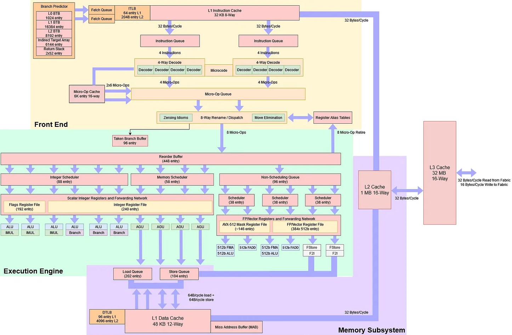
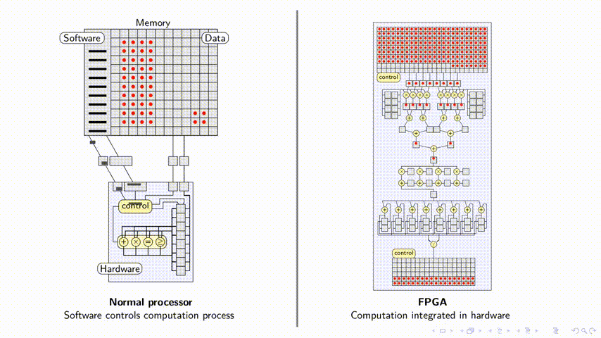
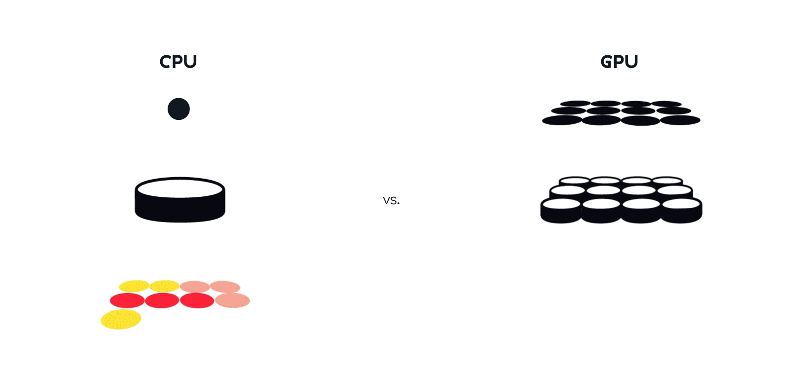

<!doctype html>
<html>
  <head>
    <meta charset="utf-8">
    <meta name="viewport" content="width=device-width, initial-scale=1.0, maximum-scale=1.0, user-scalable=no">

    <title>If You Can't Measure It, You Can't Improve It</title>

    <link rel="stylesheet" href="reveal.js/css/reveal.css">
    <link rel="stylesheet" href="reveal.js/css/theme/white.css" id="theme">
    <link rel="stylesheet" href="extensions/plugin/line-numbers/line-numbers.css">
    <link rel="stylesheet" href="extensions/css/custom.css">

    <style>
      .reveal h1, .reveal h2, .reveal h3, .reveal h4, .reveal h5 { text-transform: none; }
    </style>

    <script>
      var link = document.createElement( 'link' );
      link.rel = 'stylesheet';
      link.type = 'text/css';
      link.href = window.location.search.match( /print-pdf/gi ) ? 'reveal.js/css/print/pdf.css' : 'reveal.js/css/print/paper.css';
      document.getElementsByTagName( 'head' )[0].appendChild( link );

      function set_address(self, remote, local) {
        if (window.location.search.match("local")) {
          self.href = local;
        } else {
          self.href = remote;
        }
      }
    </script>

    <meta name="apple-mobile-web-app-capable" content="yes">
    <meta name="apple-mobile-web-app-status-bar-style" content="black-translucent">
  </head>

  <body>
    <div class="reveal">
      <div class="slides">
          <script type="text/template">
          </script>
          </section>

          <section data-markdown=""
                   data-separator="^====+$"
                   data-separator-vertical="^----+$">
          <script type="text/template">
<!-- .element: data-background-image="images/title.png" data-background-size="100%" data-background-color="black" -->

<p align="left">

</p>

----

Motiviation?

what will happen in the future / chart

- goals: how fast, what if, why so
  - answer what if (not as if)
    - the volume will spike tomorrow - show some VIX charts
    - use the same binary (don't fight compiler)


----

#### Disclaimer
<!-- .element: style="text-align:left" -->

#### CPU - https://chipsandcheese.com

  

```cpp
CPU                             Intel            AMD              ARM
 ├─ Timestamp Counter           RDTSC/RDTSCP     RDTSC/RDTSCP     CNTVCT_EL0/CNTPCT_EL0
 ├─ Performance Counters        RDPMC            RDPMC            PMCCNTR_EL0/PMEVCNTRN_EL0
 ├─ Event Sampling              PEBS             IBS              SPE
 ├─ Branch Recording            LBR              LBR              BRBE
 └─ Processor Trace             PT               -                ETM (CoreSight)
```

powered by
    https://github.com/perf-labs/perf (perf + extenions) / [machine code level] c++, rust, zig, ...


Linux 6.x - https://makelinux.github.io/kernel/map

----

Profiling
    > can't require rebulding as that chaning the perf profile for profiling)
        instrumenting
        performance counters - may require multiple runs
        collecting    profiling ( data (for bencmarking) - profiling is good to get actual distrbutions of data and cache misses
    can't check all combination in production, what if

----

perf topdown


Measuring Workloads With TopLev # https://github.com/andikleen/pmu-tools/wiki/toplev-manual

```
perf stat --topdown -I 1000 ./your_binary
    --topdown use perf info labels siimlar to probs
    perf record -e cycles:ppp -- ./your_app
    perf report --start-address=0x7f1234000000 --stop-address=0x7f1234002000
```

```
perf probe
perf intel_pt
```

```
perf record \
  -e intel_pt//u,cyc=1,tsc=1,mtc=1 \
  -e cycles:u \
  --snapshot \
  -m 64,8192 \
  -o perf.data \
  -- ls
```

----

latency
  ├─ Time it takes for a single
    - you wanna be fast you wanna be in the future speculative [TIP]

throughput
  ├─ Total number of operations

```
perf tune latency
# self checks
# emasured vs documented
```

----

##### CPU vs. FPGA vs. GPU
<!-- .element: style="text-align:left" -->

<p align="left" style="margin: 0 0;">

</p>

<p align="right" style="margin: 0 0;">

</p>

```cpp
// source: http://www.qbaylogic.com
```
<!-- .element: style="text-align:left; font-size:12px; margin: -10px 0;" -->

----

```cpp
#define PERF_LABEL(name)                                \
    asm volatile(                                       \
        ".pushsection perf.label, \"aw?\", @progbits\n" \
        ".quad 0f\n"                                    \
        ".asciz \"" #name "\"\n"                        \
        ".popsection\n"                                 \
        "0:\n"                                          \
    ); name:
```

```cpp
#include <perf/perf.hpp>

auto hot_path() {
  // ...
  PERF_LABEL(hot_begin);
  for (auto i = 0; i < N; ++i) {
      // ...
  }
  PERF_LABEL(hot_end);
  // ...
}
```

```
import perf

config = {
  "affinity": [0],
  "alignment": 16,
  "branch": ["predictable"]
  "memory": {
    "heap": ["random"],
    "stack": ["random"],
    "x86-64": {
      "dL1": ["hot"],
      "dL2": ["hot"],
      "dL3": ["warm"],
      "iL1": ["hot"],
      "iL2": ["hot"],
      "dTLB": ["hot"],
      "iTLB": ["hot"],
    }
  },
}

df = perf.bench(binary="a.out", filter="fizz_buzz", config=config)
print(df.describe())
df.ecdf();
```

```sh
perf info cpu
perf info metadata
perf tune latency --config.latency.aslr=1
perf bench asm 'mov eax, 42'
perf bench func fizz_buzz
perf bench func fizz_buzz --setup-fn init
perf bench region hot_begin..hot_end --setup-fn init
perf bench asm 'mov eax, 42' --setup-asm 'mov eax, 11' -t mov -o data/
perf view
perf plot
```

----

Bias (controlled chaos)
    cpu
    - singleton


- control the noise (don't let noise control you)
  - perf info cpu (lstopo)

    hardware effects

        cache

            Intel Xeon
                L1 - 4ns
                    keep()
                    fence()
                L2 - 13ns
                    flush()
                    fence()
                    settle()
                    prefetch()
                L3 - 75ns
                    keep()
                    demote()
                    settle()
                RAM - 294ns
                    flush()
                    fence()

                INTEL(R) XEON(R)
                AMD EPYC

                prefetch/demote
                dL1: 4ns
                dL2: 13ns
                dL3: 77ns
                RAM: 294ns

                prefetch
                dL1: 4ns
                dL2: 13ns
                dL3: 13ns
                RAM: 294ns

                demote
                dL1: 4ns
                dL2: 77ns
                dL3: 77ns
                RAM: 294ns

        layout (ASLR)
            - reshuffle

            config = {
                memory = hot
            }
    Cache:
        prefetch/cldemote
    Branch:
        different data each iteration
         - fwd no-taken
         - bkw taken
         - never-taken (no entry in BTB)
    Layout:
        reshuffle
        stack
        heap
    Others:
        TLB, port executions, ROB, ...

    Questions:
        - what about noise enviornments

----

Examples
    (memory bound, retiirng)

    dispatch (jump table)
    mph (hash table in register)

----

policy based design

#### enum_to_string - Minimal perfect hashing


<!-- .element: class="fragment" data-fragment-index="0" -->

----

#### enum_to_string - Minimal perfect hashing

```cpp
enum uri { ftp = 0, file = 1, http = 2, ws = 3, wss = 4, };
```
<!-- .element: class="fragment" style="float:left" data-fragment-index="0" -->

---

#### bit mixer
<!-- .element: class="fragment" style="float:left" data-fragment-index="1" -->
<br />

```cpp
(value * magic) >> shift
```
<!-- .element: class="fragment" data-fragment-index="2" -->

```cpp
// shift
static_assert(
  (sizeof(u32) * CHAR_BIT) - countr_zero(max(&enumerators<E>::second))
  ==                      // countr_zero - count the number of trailing
  29                      //               zero bits
);
```
<!-- .element: class="fragment" data-fragment-index="3" -->

---

```cpp
// magic
assert((to<u32>("ftp")  * 2893426669) >> 29) == 1);
assert((to<u32>("file") * 2893426669) >> 29) == 4);
assert((to<u32>("http") * 2893426669) >> 29) == 0);
assert((to<u32>("ws")   * 2893426669) >> 29) == 2);
assert((to<u32>("wss")  * 2893426669) >> 29) == 3);
```
<!-- .element: class="fragment" data-fragment-index="4" -->

----

#### enum_to_string - Minimal perfect hashing

#### lookup table
<!-- .element: class="fragment" style="float:left" data-fragment-index="2" -->
<br />

```cpp
{1, 4, 0, 2, 3}[n]
```
<!-- .element: class="fragment" data-fragment-index="3" -->

```cpp
{0b001, 0b100, 0b000, 0b010, 0b011}[n]
```
<!-- .element: class="fragment" data-fragment-index="4" -->

```cpp
(0b'001'100'000'010'011 >> 3*n) & 0b111
```
<!-- .element: class="fragment" data-fragment-index="5" -->

---

#### lookup
<!-- .element: class="fragment" style="float:left" data-fragment-index="6" -->
<br />

```cpp
(lut >> ((value * magic) >> shift)) & mask

// shift - 29
// mask  - 0b111
// magic - 2893426669 (???)
// lut   - 0b001100000010011 (???)
```
<!-- .element: class="fragment" data-fragment-index="6" -->

----

#### enum_to_string - Minimal perfect hashing

```cpp
template<class E, size_t MaxAttempts = 100'000,
         class T = underlying_type_t<E>> requires is_enum_v<E>
constexpr auto unsafe$enum_to_string(string_view str) -> E {
```
<!-- .element: class="fragment" data-fragment-index="0" -->

```cpp
  constexpr auto nbits = /*number of required bits 
                           to represent all values*/;  // 3
  constexpr auto shift = sizeof(T) * CHAR_BIT - nbits; // 29
  constexpr auto mask  = (1u << nbits) - 1u;           // 0b111
  constexpr auto [magic, lut] = magic_lut(mask, shift, MaxAttempts);
```
<!-- .element: class="fragment" data-fragment-index="1" -->

```cpp
  auto&& value = to<T>(key);
  return (lut >> ((value * magic) >> shift)) & mask;
```
<!-- .element: class="fragment" data-fragment-index="2" -->

```cpp
}
```
<!-- .element: class="fragment" data-fragment-index="0" -->

----

#### enum_to_string - Minimal perfect hashing

```cpp
template<class T>
consteval auto magic_lut(auto mask, auto shift, auto max_attempts) {
```
<!-- .element: class="fragment" data-fragment-index="0" -->

```cpp
  while (max_attempts--) {
    magic = random(); // compile-time pseudo random number generation
```
<!-- .element: class="fragment" data-fragment-index="1" -->

```cpp
   T lut{};
   for (const auto& [enumeration, name] : enumerators<E>) {
     lut |= (enumeration << (to<T>(name) * magic >> shift));
   }
```
<!-- .element: class="fragment" data-fragment-index="2" -->

```cpp
   for (const auto& [enumeration, name] : enumerators<E>) {
     if ((lut >> (to<T>(name) * magic >> shift) & mask) != enumeration)
       { lut = {}; break; } // not found, keep-going
   }
   if (magic and lut) return pair{magic, lut}; // found
```
<!-- .element: class="fragment" data-fragment-index="3" -->

```cpp
  }
  return {};
```
<!-- .element: class="fragment" data-fragment-index="1" -->

```cpp
}
```
<!-- .element: class="fragment" data-fragment-index="0" -->

----

#### enum_to_string - Minimal perfect hashing - https://godbolt.org/z/3j8qcabsj

```cpp
[1]: #uOps    [2]: Latency   [3]: RThroughput
[4]: MayLoad  [5]: MayStore  [6]: HasSideEffects (U)
```
<!-- .element: class="fragment" data-fragment-index="0" -->

<pre><code class="fragment" data-trim data-noescape data-fragment-index="1" data-line-numbers="4,5,6,7,8">
[1] [2] [3]  [4] [5] [6]   Instructions:
 1   1  0.50               shl  edi, 3
 2   5  0.50  *            bzhi eax, dword ptr [rsi], edi
 1   3  1.00               imul eax, eax, 2893426669   /*magic*/
 1   1  0.50               shr  eax, 29                /*shift*/
 1   1  0.50               mov  ecx, 0b001100000010011 /*lut*/
 1   1  0.50               shrx eax, ecx, eax
 1   1  0.25               and  eax, 0b111             /*mask*/
 1   5  0.50          U    ret
</code></pre>

---

```cpp
no lookup table (stored directly in a register)
```
<!-- .element: class="fragment" data-fragment-index="1" -->

----

    branching: fizz_buzz
    hash table vs lookup table (mph) - cache (fpga) / in register
    cache: dispatching table or branchless binary
    layout: unordered_map
    simd - throughput (gpu, tpu)

----

#### Performance <br/> [https://www.intel.com/.../articles/moores-law.html](https://www.intel.com/content/www/us/en/history/virtual-vault/articles/moores-law.html)
<!-- .element: style="text-align:left" -->

<table>
  <tr>
  <td>
  <pre style="font-size:18px">
(~) Frequency
  - Base:  3–5 GHz
  - Boost: 5–6 GHz
  - Overclocked: ~9 GHz<br />
(⬆️) Transistors
  - More Cores
  - More Caches
  - Improved Execution
  - Improved Parallelism
  - ...<br />
</code></pre>
  </td>
  <td>
    
  </td>
</tr>
</table>

https://github.com/karlrupp/microprocessor-trend-data
<!-- .element: style="text-align:left; font-size:20px;" -->

```
// Modern branch predictor can learn ~10'000 1/0 branches
// - no history { backward = taken, forward = not_taken }
```

----

Profiling -> Benchmarking

by region (not function)
        - profile regions not functions (inlining, setup)
inlining
        - inline function (different version each time)

----

- benchmarking

    latency vs throughput
        latency: asm Nx2000 - Nx1000

- harness

```asm
    rdtsc                   # rdpmc ecx
    mov r11, rax            # fine with < 1s, otherwise will overflow

    {code}

    rdtscp
    lfence
```

- symbolic execution
    - load elf
    - relocate
    - analyze (angr) / may require help with a perf run
    - bench -> distrubtuion best->worst

    [how]
        states

    regions

    ```
    perf bench fn fizz_buzz -f /tmp/a.out
    perf bench region hot_begin..hot_end
    perf bench asm 'mov eax, 42' --setup 'mov eax, 0'
    perf bench fn fizz_buzz --setup-region h..dd --teardown-asm 'mov eax, 42'
    ```

----

```
perf bench fn fizz_buzz
```

ecdf
```
perf view
perf plot --baseline
```

---

flowgraph,flamegraph
// https://github.com/brendangregg/FlameGraph

jupyter notebook
analyzing (mca,uca)
    asm/timeline
testing
    perf.bench(asm).instrucitons < 10

----

Modern CPUs are primarily bottlenecked by
 - Instruction supply
 - Data access
 - Branch prediction

Tips
- start from top-down
- benchmarking is the key

Optimiations
- wanna be fast has to be in the future
- focus on IPC
- [[code::align]] [[function::align]]
- non-temporal storage load
- static keys


----

Further readings

##### - Intel - https://www.intel.com/content/www/us/en/developer/articles/technical/intel-sdm.html
<!-- .element: style="text-align:left; margin: 0 0;" -->
##### - AMD - https://docs.amd.com/v/u/en-US/40332-PUB_4.08
<!-- .element: style="text-align:left; margin: 0 0;" -->
##### - ARM - https://developer.arm.com/documentation/ddi0487/latest
<!-- .element: style="text-align:left; margin: 0 0;" -->
##### - Apple - https://developer.apple.com/documentation/apple-silicon/cpu-optimization-guide
<!-- .element: style="text-align:left; margin: 0 0;" -->

What Every Programmer Should Know About Memory - https://www.akkadia.org/drepper/cpumemory.pdf

---

### Citadel Securities https://citadelsecurities.com/careers/engineering


          </script>
        </section>
      </div>
    </div>

    <script src="reveal.js/lib/js/head.min.js"></script>
    <script src="reveal.js/js/reveal.js"></script>

    <script>

      // Full list of configuration options available at:
      // https://github.com/hakimel/reveal.js#configuration
      Reveal.initialize({

        // Display controls in the bottom right corner
        controls: true,

        // Display a presentation progress bar
        progress: false,

        // Display the page number of the current slide
        slideNumber: 'c',

        // Push each slide change to the browser history
        history: true,

        // Enable keyboard shortcuts for navigation
        keyboard: true,

        // Enable the slide overview mode
        overview: false,

        // Vertical centering of slides
        center: true,

        // Enables touch navigation on devices with touch input
        touch: true,

        // Loop the presentation
        loop: false,

        // Change the presentation direction to be RTL
        rtl: false,

        // Turns fragments on and off globally
        fragments: true,

        // Flags if the presentation is running in an embedded mode,
        // i.e. contained within a limited portion of the screen
        embedded: false,

        // Flags if we should show a help overlay when the questionmark
        // key is pressed
        help: false,

        // Flags if speaker notes should be visible to all viewers
        showNotes: false,

        // Number of milliseconds between automatically proceeding to the
        // next slide, disabled when set to 0, this value can be overwritten
        // by using a data-autoslide attribute on your slides
        autoSlide: 0,

        // Stop auto-sliding after user input
        autoSlideStoppable: true,

        // Enable slide navigation via mouse wheel
        mouseWheel: false,

        // Hides the address bar on mobile devices
        hideAddressBar: true,

        // Opens links in an iframe preview overlay
        previewLinks: false,

        // Transition style
        transition: 'none', // none/fade/slide/convex/concave/zoom

        // Transition speed
        transitionSpeed: 'default', // default/fast/slow

        // Transition style for full page slide backgrounds
        backgroundTransition: 'none', // none/fade/slide/convex/concave/zoom

        // Number of slides away from the current that are visible
        viewDistance: 1,

        // Parallax background image
        parallaxBackgroundImage: '', // e.g. "'https://s3.amazonaws.com/hakim-static/reveal-js/reveal-parallax-1.jpg'"

        // Parallax background size
        parallaxBackgroundSize: '', // CSS syntax, e.g. "2100px 900px"

        // Number of pixels to move the parallax background per slide
        // - Calculated automatically unless specified
        // - Set to 0 to disable movement along an axis
        parallaxBackgroundHorizontal: null,
        parallaxBackgroundVertical: null,

        // Optional reveal.js plugins
        dependencies: [
          { src: 'reveal.js/lib/js/classList.js', condition: function() { return !document.body.classList; } },
          { src: 'reveal.js/plugin/markdown/marked.js', condition: function() { return !!document.querySelector( '[data-markdown]' ); } },
          { src: 'reveal.js/plugin/markdown/markdown.js', condition: function() { return !!document.querySelector( '[data-markdown]' ); } },
          { src: 'reveal.js/plugin/highlight/highlight.js', async: true, callback: function() { hljs.initHighlightingOnLoad(); } },
          { src: 'reveal.js/plugin/zoom-js/zoom.js', async: true },
          { src: 'reveal.js/plugin/notes/notes.js', async: true },
          { src: 'extensions/plugin/line-numbers/line-numbers.js' }
        ]
      });

      function handleClick(e) {
        if (1 >= outerHeight - innerHeight) {
          document.querySelector( '.reveal' ).style.cursor = 'none';
        } else {
          document.querySelector( '.reveal' ).style.cursor = '';
        }

        e.preventDefault();
        if(e.button === 0) Reveal.next();
        if(e.button === 2) Reveal.prev();
      }
    </script>

  </body>
</html>
